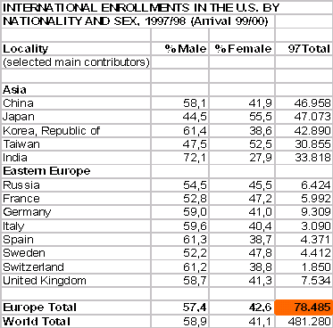

|
Business Plan „LetsStudyAbroad.com“
Final project work
of Robert Sösemann & Mark Malik
at CSUHayward, Winter
Quarter 2001
For
“Management Of Multimedia Business”,
Instructor:
Camille Levasseur
Table of Contents
I.Executive Summary 2
II.Description of the Business 2
A.The Service We Provide 2
B.Company Ownership & Management 3
C.The Market and Our Target Customers 4
D.The Competition 6
III.Objectives 9
A.for our Customers 9
B.for our Partners/Advertisers 10
C.For our Company 10
IV.Success Strategy 11
A.How we offer BETTER Content 11
B.How to generate traffic [Marketing plan] 12
C.How to create revenue 13
D.Site Design 13
V.Financial Section 14
A.Start-up Costs 14
B.Cash-Flow Statement 15
VI.Timeplan 15
The present LetsStudyAbroad.com is an online start-up company with two half time and one full time employees. We are a high-powered team of creative individuals.
The company creates an Internet community attractive to international students (in the start-phase only European students) coming to the U.S. for educational purposes.
Being by their sides as a strong guide and giving all the really helpful information, it is peace of mind what we offer to the students and their parents. Knowing the ropes first hand is our greatest assets.
Timesaving is the second thing that comes to mind. We help in clearing the red tape and showing shortcuts to the most important to the least, almost luxurious tasks.
This section is the “What We Do” of the business plan. It describes the kind of service we are going to provide by listing its key features. We will give a profile of our customer and provide official statistic about the quantity and quality of the target audience. Also, we will give insight into the existing market and who our competitors are.
As both founders are recent or former international students in the U.S. they both realized the problems a foreign student runs into once he/she has arrived her in the US. Not only the overwhelming culture shock (depending on which part of the world the student is from) but also the sheer things to do are daunting. Therefore, Mr. Malik and Mr. Soesemann decided on making things a bit easier for their colleges.
Valuable Content: Before we launch the site we will create a database archive with high-quality articles covering each step on the long path to the foreign university. This covers crucial information for the students decision-making process, over step-by-step guides till their arrival in the U.S., up to insider tips who to get along in the new environment. Additionally we will also provide content concerning “having a good time abroad”. This covers nightlife, general entertainment, sport and travel inside the U.S.
City-specific micro sites: Cities and areas such as New York, Southern California, Boston and Dallas, which have the most concentration on International students (for statistics see www.opendoorsweb.org) will be covered in depth, from where not to live and eat, buying a used car to where to party.
Printable To-Do-Checklists: For every step of their challenge we offer the service of printing out day-to-day tasks.
Communication Platform: For each registered student we provide an own @letsstudyabroad.com (or an abbreviation like “lsa.com”) email address and access to our chat-server. We plan to offer a bulletin board with every main article to post topic-related opinion and personal experiences. In addition we inform the student about cheap phone-card tariffs and free web-based services.
User as Content Provider: We plan to give away valuable goodies (phone-cards, coupons, etc.) to members for the submission of topic-related articles. (For details see section “How to provide BETTER content”)
Multi-language content: Having the site set-up in various languages (German & French), this is more for the sake of the parents (who are financing the education) so that they can first hand participate in various decisions with their child (student). Languages such as Japanese, Chinese, Hindi, Korean, Turkish and Russian will be translated in future extension of the site.
The company was incorporated early in 2001 and owned by its principal founders Mark Malik and Robert Soesemann. The company starts as a general partnership at 50% ownership each. Each of the founders has contributed to company in form of $ 25,000 in capital from several saving accounts, credit cards and will additionally borrow $ 50,000 from their banks.
Mark Malik. Mr Malik was born in Copenhagen, Denmark. As an (former) international student Mr Malik has learned first-hand the difficulties that an international student faces. With a background in Broadcasting, Mr Malik graduated from San Jose State University in the top 5% of the class of 1999.
Since his graduation, Mr Malik has worked at KTVU (FOX) in San Francisco, and is currently working as a broadcast engineer at TechTV in San Francisco. Starting on his Masters degree at Cal State Hayward in 2000, he has been working on various web-based programs and his strengths lie in web development and content.
Robert
Sösemann. After Mr. Sösemann was born in the former
GDR, raised in the high-tech metropolis Munich, he was a major in
computer science and new-media science at Germanys oldest
university Tuebingen. In 2000 he took part in an exchange program
to spend one semester in the U.S. Because of his interest in the
internet/new-media industry he came to CSU Hayward, located in the
bay between Silicon Valley and San Francisco. In his 6 month as a
grad-student in CSUH Multimedia Program, Mr. Sösemann met Mr.
Malik.
Besides theoretical IT knowledge, skills in
web-design and concept development, Mr. Sösemann improved his
knowledge in the field of new media by numerous internships with
well-known web companies (e.g. Pixelpark AG) and worked as a
freelancer for an internet full-service provider in Tuebingen.
By
doing that he gained insight into project-management,
content-development, and web-design.
__
Although the experience and expertise of the two founders is crucial in the start-up phase of LetStudyAbroad.com, the company is build to work as a turnkey operation in the future.
Our main source of information on our customers came from the New York based Institute of International Education (IIE), a non-profit organisation supporting international student exchange to the U.S. IIE keeps track of all important statistic, numbers and characteristics of all visitors and programs (see website www.iie.org/).
All the facts and the figures in this section are based on the IIE’s annual report Open Doors found at their website www.opendoorsweb.org/.
The statistics show that LetsStudyAbroad.com would have an enormous, BUT narrowly defined target audience with an endless supply of annual growth.
In the beginning the typical visitor to the site will be European, between the age of 18 and 35, with an equal number of Males and Females. Also they will have decided on the city and the University/high School of their choice. Although, once LetsStudyAbroad.com becomes global, these numbers and stats will change; we believe that the majority will be males’ origination from Asia.
According to
“Opendoors”, the number of international students
studying in the United States grew sharply during the 1999/2000
academic years. This year’s total of 514,723 represents an
increase of 4.8% over last year’s figure. This year’s
rise builds on last year’s 2% increase and 1997’s 5.1%
jump in international enrolments.
Despite the increases in
foreign student numbers over the history of the census, these
students’ share of the overall U.S. higher education student
population increased from only 1.4% in 1954/1955 to 3.8% in 2001.
While, the number of International students has not risen in
percentage, it has grown in numbers in field of computer science,
medical and other higher education levels are considerable.
As
both founders are from Europe and by that are more familiar with
its culture and language, we believe that we have an edge in that
market; therefore, we have decided to start with Europe. At the
same time, the number of European students, which grew to
78,485 students in the year 2000 (change of 6.3%) plus around
20,000 students how are already in the U.S (totalling a
approximate number of 100,000 students) speaks for the vast
untapped market puritanical of customers who are still not loyal
to any other site.
For prove see the following excerpts from IIE’s tables:

In the following section you will find our primary and secondary competition. Primary competitors are profit-oriented web services that target international student coming to the U.S. To count as competitors their websites must offer at least similar information and target the same needs and interest of our customer.
As secondary competitors we understand all off-line services (profit or non-profit) that support European students with their academic future in the U.S.
Primary Competitors:
iStudentCity.com: iStudentCity.com is an online community founded in July 2000 by Virtualab. We regard iStudentCity.com as main competition, because, they have seen what the students needs are once he/she has decided on their education plans here in the USA -from pre-arrival to way past the start of their first semester. At the same time we at LetsStudyAbroad.com feel that iStudentcity.com is working on repeat customers with other items of interest. Items such as buying flowers online (from their site) to the integration in the American society, which at times can be hard depending on which part of the world the student is from. We feel that iStudentCity.com has the four most important bases covered 1) before going 2) settling down 3) while studying 4) after graduation. The site is well thought through, and gives a very good road map for the students. This in turn can and does give repeat customers, which mean revenues for the site. Nevertheless the site is lacking in ways that we can and should take a lead in. First, there is no language translation, and International students have parents who perhaps do not read English (but are paying for the education) we feel that the parents are the major targets, so that they (parents) can be in the process of their child’s future “every step of the way”. Second, iStudentCity.com does give out information on things to do, but fails (in our opinion) to show the importance of each “Must Do” item (such as drivers licence, to social security card). What iStudentCity.com lacks is, to show these students not only what but also how things are done (for most students it is their first time away from home, they are excited but also scared) and therefore, they must be shown guidance.
iAgora.com: The web
start-up iAgora.com was founded by the two Spanish friends
Philippe Negre and Sacha Levy in March 2000. In its 3 offices in
Barcelona, Spain (headquarter), New York and Melbourne (Australia)
iAgora.com employs a crew of around 30 people including
designers, web developers, writers and management.
Its division
into 3 main sections (iTravel, iStudy, iWork) shows that the
site not only targets international students, but nearly every young
person, spending a certain time in a different country for
educational, entertainment or job purposes. IAgora.com
mission to “connect internationals”, show that their
main service is to provide a platform for general information
exchange among its members by newsgroups, bulletin board and chat
rooms.
Although iAgora.com gives minor information and
tips how to manage a student exchange, this is much more general
than what we want to provide. As they are targeting not such a
specific niche market and do not provide German language support, we
don’t regard iAgora.com as a main competition.
StudentAbroad.com: Site that covers a lot of information, however, it is basically a very general scale and thus cannot compete with what we have planned for LetsStudyAbroad.com. At the same time StudentAbroad.com is covering more “fun” stuff and thus would be an interesting read (for a students spare time) but as far as useful information and guidance is concerned, this site is lacking.
StudyUSA.net: It has information, events and hot tips for students, but again we find it to be more general and does not cover the useful information a student needs when he/she is planning, or has planned their education in a far away country. Although, the site is well put together, and it does cover some of the issues we are planning to cover in LetsStudyAbroad.com; therefore, we should take note and perhaps look closely to their layout.
StudyAbroad.com: StudyAbroad.com is a worldwide site, but it covers all the aspects of students crisscrossing all over the planet. This is not what we at LetsStudyAbroad.com have planned; therefore, we believe that StudyAbroad.com will not be a competition that will cause us sleepless nights. They do cover colleges, universities and their programs (much like what we will be doing) but they are covering Europe, America and other countries, where we will only concentrate on students coming to the USA.
Secondary Competitors:
As for our secondary competition there are the Universities in various countries that have huge databases where they store student reports. We consider them as our secondary competition because, they have all this information but like any state run offices they are mostly dated and are not very broad. Although, they have strong connection to other organizations that handle student exchanges for a specific country and often offer a lot of useful tips on their site as well as send print brochures, for example www.daad.de in Germany, www.su.dk in Denmark and the Fullbright commission that is all over the world.
This section is the “Where we want to go” of the business plan. It describes our main goals due to quality and customer service for our growing target audience, that we pursue in the first year online. It includes facts and figures which will help our commision partners and advertisers to decide about their sales and banner ad audience.
In paragraph C we will mention our personal financial objectives for LetStudyAbroad.com.
Our objectives for our constant visitors is simple. Create the No. 1 website for essential and fun content concerning all steps of their stay in the U.S..
This means having the best, up-to-date content, the most interessting stories, the website that is easier to use as as those of the competition. This also means giving the members a feeling of being part of a big community, where they can share negative feeling and positive experiences.
To create trust in our brand and credibility we are very “picky” with the choice of exclusive advertisers and partners. We will have to make sound choices as to which company we want to have dealing with (are they serving a purpose for the students in price, quality, etc.).
By fullfilling all those premises, we want to make their time abroad a more fun and care-free experience.
The reason we feel that LetsStudyAbroad.com will be different than our competition is that we can give our Partners/Advertisers a very streamline customer base. As the numbers indicate we estimate approximately 30,000 students as repeat-visitors (30% of 100,000 students total). We can justify these number which are much higher than the normal 3% conversion rate, because of we give the service for free.
International students in this country are “generally” from well-to-do families and have cash to spend (especially students from Asia); therefore we can almost guarantee that the people who visit our site are young, cash spending consumers (eg. studies have shown that students will spend more time and money on their appearance than on food). This in turn will give our advertisers the peace of mind, as they will see our followers at LetsStudyAbroad.com require content specific information, and this will give a positive click-through rate for the companies that advertise with us.
First and foremost we at LetsStudyAbroad.com are a company for the students. Having said that, we know that we have to generate a positive cash flow in order to survive and at the same time we must serve these students without short-changing them in any way, shape or form. We will forge affiliate partnerships with various profit and non-profit organizations, and will be very visible on campuses with advertisements in University newspapers. Financially we intent to be in the “green” within the first eighteen months of launch, and this will co-inside with our world wide launch in various languages (Chinese, Korean, Hindi, French, Spanish and Arabic) serving students from these nations. LetsStudyAbroad.com is going to be a one stop shop for the international student coming to the USA.
The objective of our site is simple, to reach out to as many students who are coming to the US and at the same time keep them coming back as loyal customers.
Section IV is the “How to come there” of this business plan. On the following pages we give an insight into our strategy to become the webs best location for our target group to find quality information. In paragraph B we want to give insight into our marketing plan(how to generate traffic on the site) and how to convert traffic into revenue. In the end we will talk about general site design issues(e.g. navigation, interface design, tech. usage)
To stand out against an already established competition, we must accomplish all the student(s) need to an even higher degree.
As we call ourselves an info community, we have to emphasise both, rich information and the community character. We will do that by:
[Cover more than just the basics] - To cover more than just the very crucial tips about how to get along in the U.S., like the most competitors do, we go much further with our entertainment section about nightlife, dating and travelling.
[Don’t
reinvent the wheel] - As former international student we know,
that the most of the information you get before you leave is nearly
worthless because it is to general and written to fit all possible
situations.
That’s why many universities keep achieves of
so-called experience reports, a collection of personal tips
and experiences, every student has to write when he comes back from
the U.S. In exchange for free advertising we plan to include useful
information from those reports into our content.
[Appeal to user’s sense of community] - To keep this practical knowledge always up-to-date, we let our members become a source of content. By giving away useful incentives (free phone cards, movie tickets, etc.) we want to attract students to write small articles about a specific topic. The more useful other users rated this information, the more attractive will the incentive be. The functionality to rate content pages will be also included in our original content, to get useful user feedback.
To even make this more attractive we are going to vote very active members as “The user of the month” or “Top 100 Writer”. This concept is working very well on other site likes AMAZON.com because it appeals to user’s feeling of being helpful, influential and important.
___
Other important features we offer to increase the competitive edge:
Different language support (German is not supported by any other similar site)
City specific micro sites (helps to give more precise information)
Printable material (because the
problems arise in the field and not in front of the computer)
We at LetsStudyAbroad.com know the importance of generating traffic and keeping it coming back as repeat customers. Advertising is expensive, however, we feel that it is a must and therefore it is going to be our major expense. Although, there are ways that this expense can be kept down without the high expenses involved in the start.
Advertise on universities radio stations (in various countries)
Make deals with government education offices (in various countries) and have them deliver reading material to potential students headed to the USA.
Work with education bodies such as the Fullbright Commission here in the USA, and make deals so that our web site is visible at their offices around the globe.
Distribution of publicities items in Europe is much cheaper and different than here in the USA, use this to our advantage and distribute free pens, mouse pads and other stuff at various colleges.
Our revenues will come from advertisement sales (banners) and Text links that are more subtle and blend into the design of the site. How we will attract companies that will/should advertise with us will be by showing them
Traffic numbers (unique vistors, pageviews)
Choice of plans to advertise
Targeted advertising for a specific company to put their ad on a page that deals with what the advertiser is trying to sell (Farmers Insurance would be on our Auto page). Other combination may be (travel-travelocity.com, driving – Dollar Rental). Those banner spaces can be exclusive or shared with other banners in rotation.
In the first month we will offer a flat-rate (fee per month). Only after we have attracted enough visitors/members it makes sense to charge on page-impression basis.
After the contract time (normally one month) has expired, the customer will be offered to stay with their original plan or they could change to an afilliate-like “click basis” where they will only be charged for click-throughs that lead to a purchase or another predefined goal.
The biggest percentage of international student either has no private Internet connection or use one of the free dial-up provider. So one of the main premises of the site design is to keep it fast. Other objectives are:
Intuitive, consistent user interface
Easy and predictable navigation
“Redundant” access to information (different ways to do/find things)
Attractive and clear design (e.g. using colour codes for categories)
No need for plug-ins that don’t add or support user value (no useless, flashy gimmicks)
Compatible with different browsers, versions and system (resolution, colour-depth, brightness)
Always provide print-versions of articles
“Cross-user compatibility”
The last premise means to be useful for members and understandable and attractive to random visitors.
While members are able to login on the very first page to access their features, we also provide a Guided Tour through the parts of our service, the advantages of becoming a member and an easy to find registration area.
In order to create a brand we must deliver information that cannot be found else where so easy and intuitivley.
To accomplish this we must be “hip & trendy” in the site’s tonality and design, while providing a professional an sound content.
Make the experience of visiting LetsStudyAbroad.com a relaxed one, make the visitor feel as if the site has only been created for him/her and show them that the input they sent us (in form of email-feedback or our rating system) up there on the site.
As shown in the Cash-Flow Statement we start the bank repayment from the first month (April) and intent to be profitable in December, which will be where we will surpass our initial $ 100,000 mark and by that be profitable.
Our start-up costs come to $ 100,000 for the site development, required hard- and software and advertising. The detailed start-up plan with the proposed financing is as follows.
As both founders bring in excellent skills and experiences from former jobs and their educational background as Multimedia students the concept development and front-end /interface design is done by Mr. Soesemann and Mr. Malik by themselves. For the back-end and database programming a talented third person will be hired. This person is a friend of the two, who may join the management team as a third partner, who brings in additional capital. In the beginning the biggest amount of money will be spent on marketing and promotion of the website to gather together the traffic necessary to make this a success and to stand out against our competitors.
|
Start-up Plan |
|
|
Start-up Expenses |
|
|
Legal (Business Reg., Trademarks, Domainnames, etc.) |
|
|
Hardware (Computers, Scanner, etc.) |
|
|
Software (Office,Design, Webauthoring, Programming) |
|
|
Content Creation/Research |
|
|
Web Hosting (ISP, Webspace) |
|
|
Total Start-up Expense |
|
|
|
|
|
Start-up Funding |
|
|
Founders |
|
|
Loans |
|
|
Total investment |
|
The company has a single office located in Foster City, California. It comprises 900 square feet of space. As this is the residence of one of the partners, our costs will be only the utilites.
The costs for positioning of LetsStudyAbroad.com will be determined within the first 3 month after the launch of the site.
We will start with a total of $ 100,000, out of which we each partner come in with $ 25,000 and borrow another $ 50,000 from our bank. The reason we are using a bank and not any business angel capital is that the repayment of such a small amount will be minimal and we will not have to answer to anyone about our success (besides ourselves). The key to our success lies in our advertising plan, we will be advertising in countries outside the USA where the costs are much lower. In the first year we plan to employ a technical supervisor in March and our total payroll will be $ 12,000 per month (break down is $ 4000 for all three of us). Financially we will be in profit in the ninth month (December) where we will surpass our original investment of $ 100,000.
For actual numbers see appendix.
March 1st -14th Hire technical supervisor, Concept Development
March 15th–31st Equip office, hire editors and translaters, acquirre existing content, contract partnerships
April, 2001 Content Creation, Site/Database Development -> beta, start promotion
May 1st-15th Contract with Advertiser, Continue Development, Usability Testing, Bugfixing
May 20th Upload to Server, last testings
May 30th Launch, LetsStudyAbroad.com goes online!!!